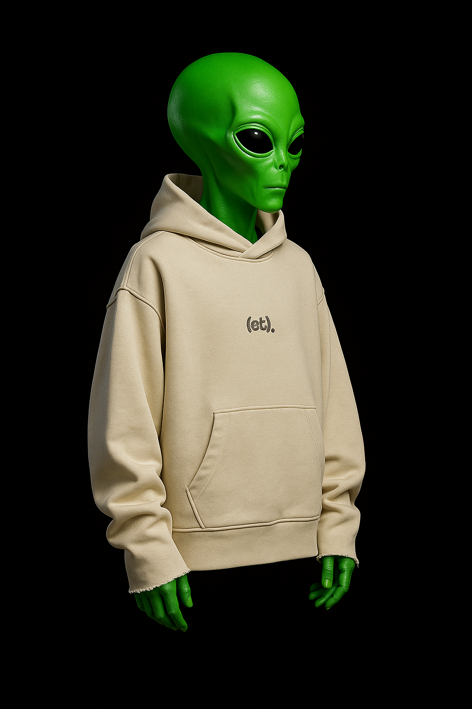

Buzo Beige “(et).”
Base neutra para looks urbanos, inspirado en el primer diseño de la serie.
$ —
colección 2025
(Et)éreo es la marca de buzos creada con inteligencia artificial que fusiona estética espacial, oversize urbano y una identidad que no pasa desapercibida. Diseños pensados para destacar en la calle y en las redes — ser etéreo en un mundo atípico.
Ver catálogoBase neutra para looks urbanos, inspirado en el primer diseño de la serie.
Mezcla de tonos cálidos futuristas. Streetwear con presencia.
Color tendencia con vibra espacial, ideal para campañas visuales.
Look editorial con carácter futurista, pensado para destacar.
Pose frontal poderosa, ideal para hero banners y portadas.
La opción versátil para el día a día sin perder el aura (et)érea.
Los buzos son oversize/boxyfit. Te recomendamos tu talle habitual; si te gusta extra holgado, sube uno.
Lavar del revés, en frío y con colores similares. No usar blanqueadores. Secado a la sombra.
En el canva, al final, se encuentran los links de las conversaciones.
Sí, enviamos a todo el mundo. Los tiempos y costos varían según tu ubicación.